Title: Driving Digital Growth and Fan Loyalty: A RACE Framework Strategy for The Redmen TV’s 15th Anniversary Campaign
Executive Summary
This report aims to enhance The Redmen TV marketing performance. To begin with, this report visualizes the company using the BMC and 7 Assets to introduce it. Then, by utilizing VRIO and 4Cs framework analysis and secondary data, the report points out that although the brand has competitive advantages, it has obvious shortcomings such as in brand exposure and user interaction. Finally, it applies the RACE framework to propose a comprehensive digital strategy to address it, supported by a cost-benefit analysis and implementation plans. It ends with a reflection. The research roadmap is shown in Fig. 1:
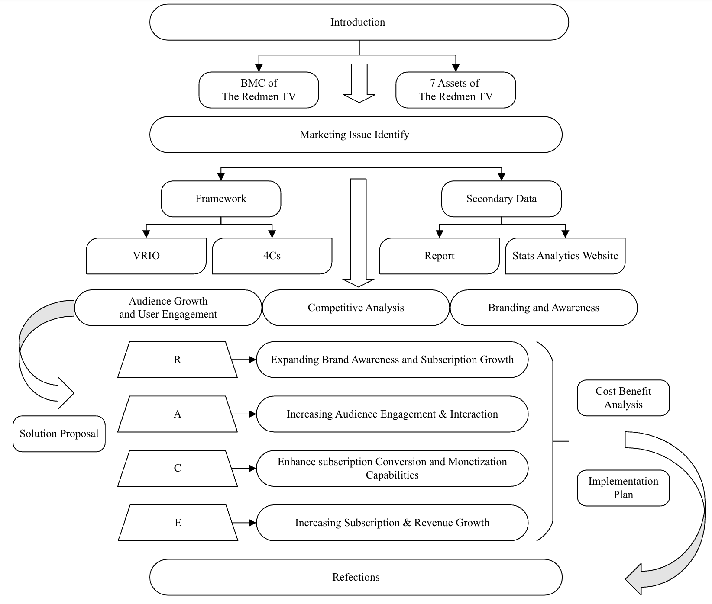
1. Introduction
1.1 Overview and Business Model Canvas of The Redmen TV
The Redmen TV is an independent digital media platform that exclusively focuses on covering LFC. It provides football fans with in-depth match analysis, tactical breakdowns, exclusive interviews, and fan reactions (Net Worth Spot, 2025).
The Redmen TV was established in June 2010. Over time, it expanded into a subscription-based model, offering premium content on platforms such as Redmen PLUS and YouTube Memberships. The company primarily relies on ad revenue, sponsorships, paid memberships for monetization (Net Worth Spot, 2025), events, merchandise etc. According to The Redmen TV’s LinkedIn profile, the company is private and is currently hiring 16 individuals (LinkedIn, no date).
Using the BMC helps identify key activities and channels where marketing efforts can be strengthened (Osterwalder and Pigneur, 2013). Fig. 2 shows the BMC of The Redmen TV.
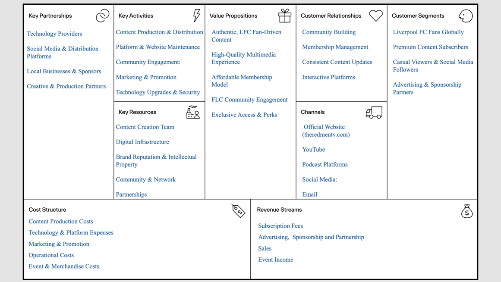
| Fig. 2. BMC of The Redmen TV Source: Adapted from https://www.strategyzer.com/library/the-business-model-canvas |
1.2 Seven Assets of The Redmen TV
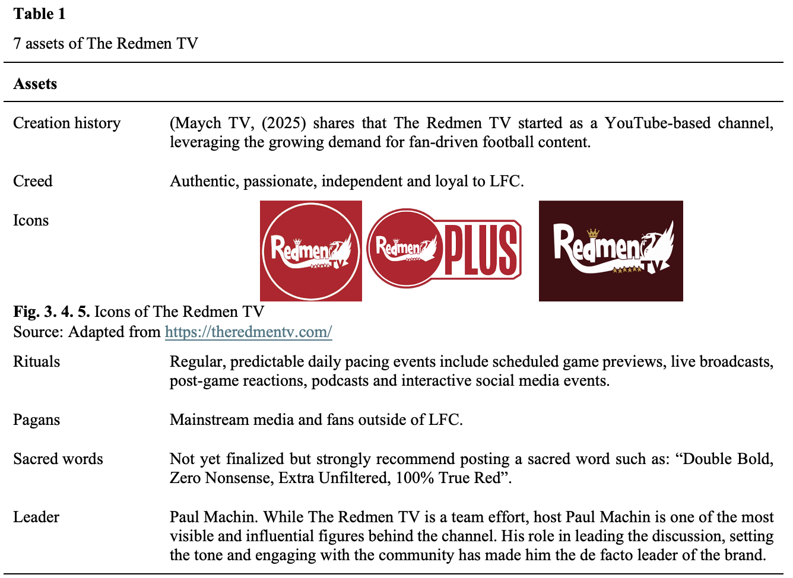
1.3 Current Marketing Priorities of The Redmen TV
According to (Maych TV, (2025) and the guest talk interview, the marketing position is closely related to fans’ needs and strives to communicate football culture genuinely and engagingly. The company’s marketing focuses on creating a cross-platform communication matrix through YouTube and social platforms, attracting users with free content like short videos, podcasts, and online interactions. Balancing business and content quality under the “passion and creativity first” concept, the company aims to build a loyal and profitable media brand.
2. Marketing Challenges Identification
2.1 Audience Growth and User Engagement
The Redmen TV's current audience growth is slowing. The channel has exceeded 500,000 subscribers around 2020 (The Redmen TV, 2022). In the following years, it only grew to about 557,000 according to data from VIDIQ (Data updated on Feb 18, 2025), a relatively slow growth rate. This suggests that saturation is approaching among core Liverpool fans, making it difficult to reach new audiences further.
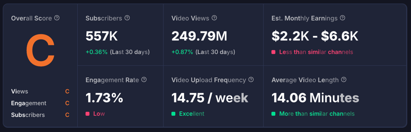
Source: https://vidiq.com/youtube-stats/channel/UC30avO2n6knAFiH2c8e4qiw/
From a perspective of consumer, Lauterborn’s 4Cs analysis is used to compare The Redmen TV with a direct competitor (This Is Anfield) and an indirect competitor (Tifo Football), highlighting differentiation issues. The number of their YouTube fans is shown in Fig. 7.
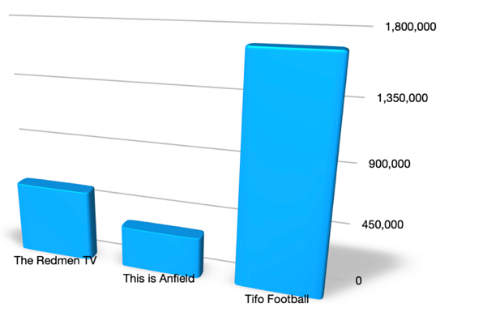
Source: Tidy up from https://www.youtube.com/@theredmentv, https://www.youtube.com/@thisisanfield, https://www.youtube.com/@Tifo
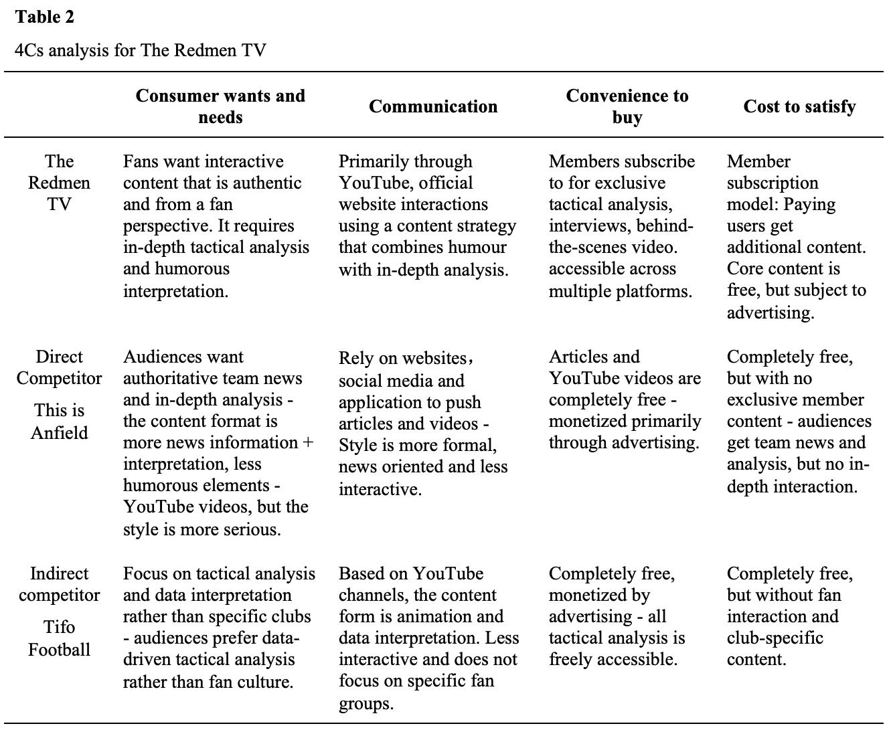
Another piece of evidence from the Similarweb report is the low engagement rate and short visit duration.
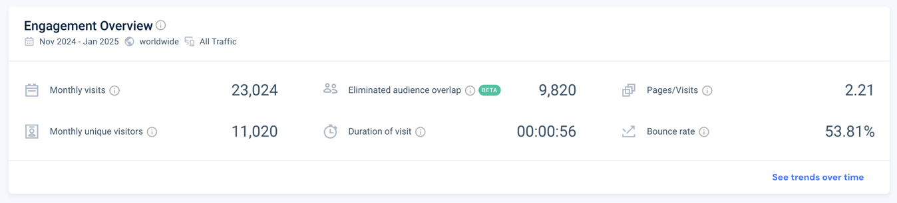
In addition, in terms of user engagement, although the core fans are still active (paying members subscribe to "Redmen TV Plus", purchase peripheral products, etc.), how to retain the universal fans and turn them into loyal users is a challenge.
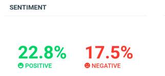 | 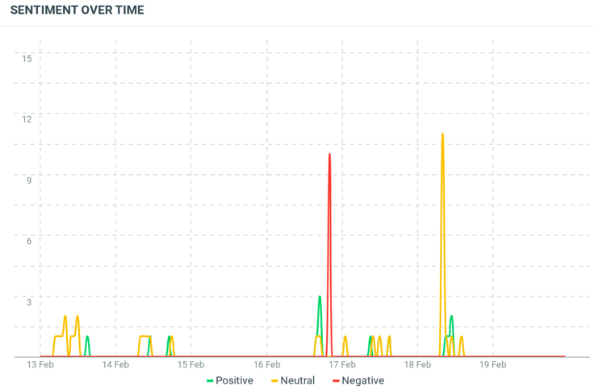 |
According to Hootsuite's monitoring report data, negative sentiment is 17.5 percent. This may have affected the trust and stickiness of some viewers to the channel to some extent.
In general, how to continuously attract new fans, activate existing fans, and control negative public opinion is the main problem Redmen TV faces in terms of audience growth and user retention.
2.2 Competitive Analysis
From a consumer demand perspective, target audiences expect more diverse and interactive content (Euromonitor International, 2025), while existing content formats and payment models fail to convey high value propositions, resulting in a mismatch between user perceptions and actual payment expectations.
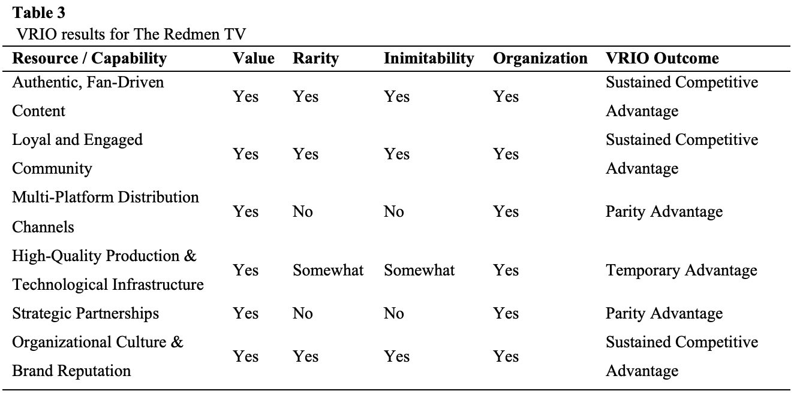
By utilizing (Barney and Hesterly, 2019)’s VRIO framework, Table 3 highlights The Redmen TV’s strongest competitive advantages: authentic content, community participation, and a strong brand culture. These unique resources, though valuable and scarce, are difficult for competitors to emulate and are well supported by the organization. While distribution channels and production infrastructure provide valuable support, they are not as unique. Focusing on its strengths and optimizing other areas will allow The Redmen TV to maintain and grow its competitive position.
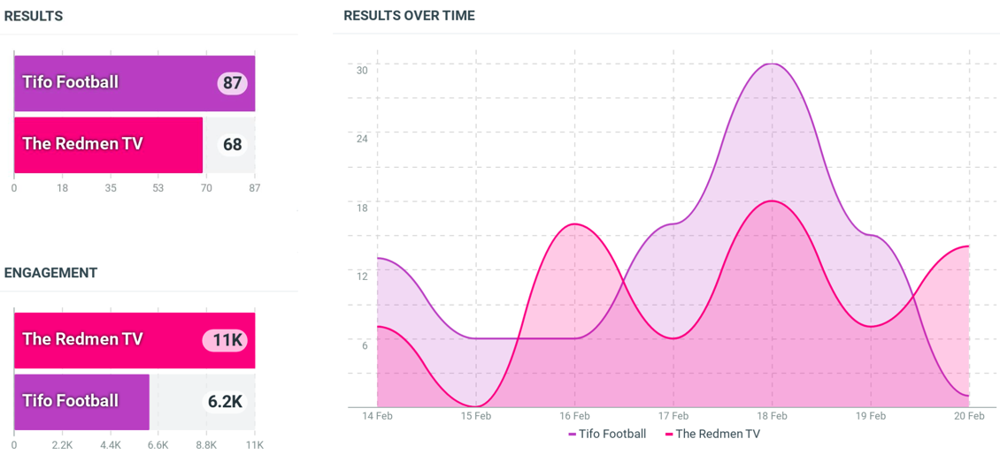
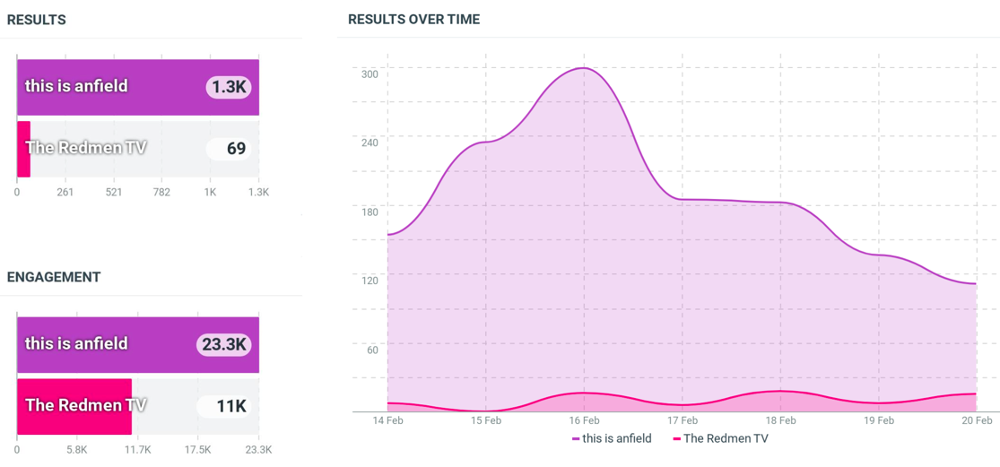
The results showed that while some of The Redmen TV's content received a certain number of views, the overall engagement rate was significantly lower than its competitors. This suggests that the current promotion strategy is not effective in engaging users and driving users from a single channel to other platforms.
Therefore, the current competitive position of Redmen TV in the industry is: leading in Liverpool fan media, but in the middle of the whole football we-media landscape, it needs to consolidate its characteristics and continue to innovate in order to cope with the surrounding competition.
2.3 Branding and Awareness
As The unofficial fan media of LFC, The Redmen TV has accumulated a certain brand foundation and audience scale. It is well known among Liverpool fans, YouTube channel has approximately 558,000 subscribers, about 680,000 Twitter followers and about 420,000 Facebook followers (Feedspot, 2025).
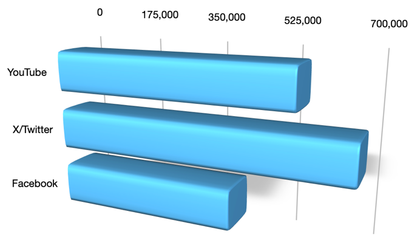
Source: Adapted from Feedspot https://videos.feedspot.com/liverpool_fc_youtube_channels/
Its fans come from all over the world, and the traffic of their official website are mainly from The United Kingdom (58.55%), The United State (14.40%), Ireland (9.07%), Netherland (5.22%), Australia (2.97%), Indian (2.32%), Canada (2.02%), Germany (1.64%), Malaysia (0.73%), Romania (0.54%), etc.
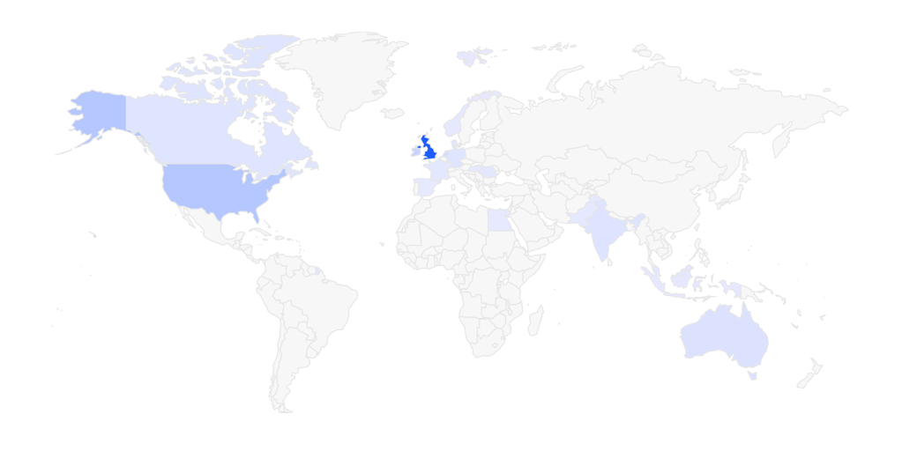
Source: Similarweb analytics for The Redmen TV’s official website
However, compared with the top football media, brand expansion still has bottlenecks. The ranking of The Redmen TV as shown as Figure 14:
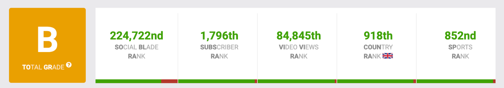
Source: https://socialblade.com/youtube/c/theredmentv
At present, the audience is mainly concentrated in the Liverpool fans and has not yet broken through the circle. The Redmen TV team is also aware of this, having publicly stated that they "want to reach more Reds fans around the world" and strengthen brand awareness. They are even hiring marketing assistants in 2022, dedicated to enhancing brand exposure and business promotion (Hoare, 2022), which shows that expanding brand impact is an urgent need for them.
3. Solution Proposal
To capitalize on the important milestone of The Redmen TV's 15th anniversary. This section will focus on audience growth and user engagement. According to the RACE (Chaffey, 2024) framework and entrepreneurial marketing principles, a feasible and comprehensive social media campaign was designed to enhance brand exposure and stimulate user engagement through multi-platform interactions.
3.1 Reach – Cross-platform Hash Sign Campaign.
Create a high-quality 15th anniversary video that looks back at the growth of The Redmen TV, showcasing the most memorable moments, classic content and fan stories. This report designed a event poster which present in Figure 15:
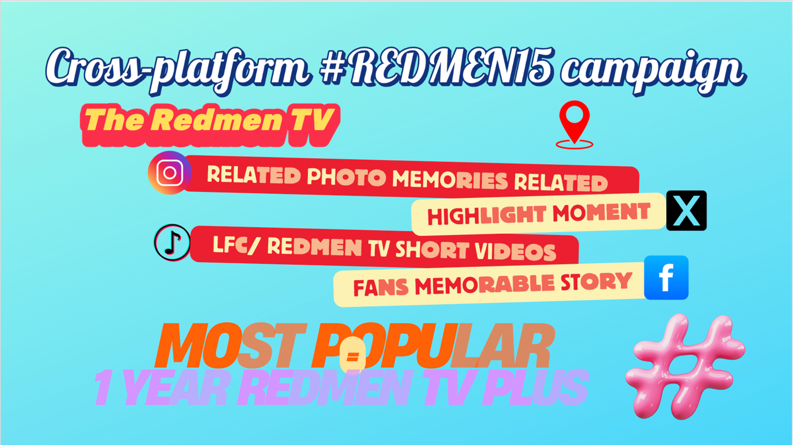
Start the #REDMEN15 hashtag campaign on Instagram, TikTok, X(Twitter) and Facebook. Fans are encouraged to share their stories, memories, or favourite moments with The Redmen TV. Add local exposure with geolocation tags. The most popular content creators on each platform will receive a one-year Redmen TV Plus membership. The implementation method and expected outcomes are as Table 4:
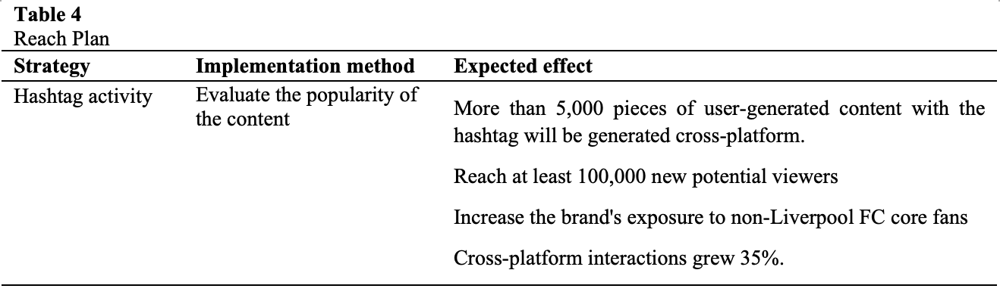
3.2 Act - Video Comment Interactive Rewards Program
Create a high-quality 15th anniversary video that looks back at the growth of The Redmen TV, showcasing the most memorable moments, classic content and fan stories, the top three comments with the most likes will be rewarded with 1-year, 6-month, and 1-quarter membership respectively. This plan be visual presented in Fig. 16:
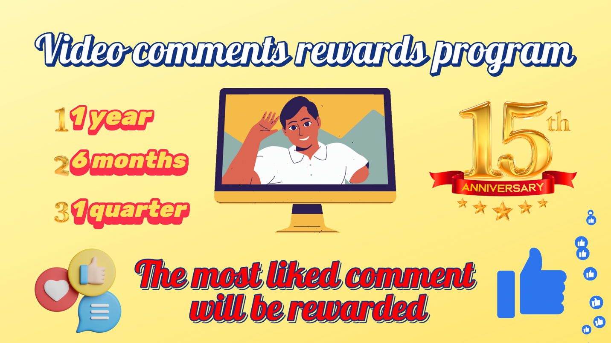
The campaign lasts for two weeks, and fans are regularly reminded to participate on social platforms. The implementation method and estimated outcomes are as follows:
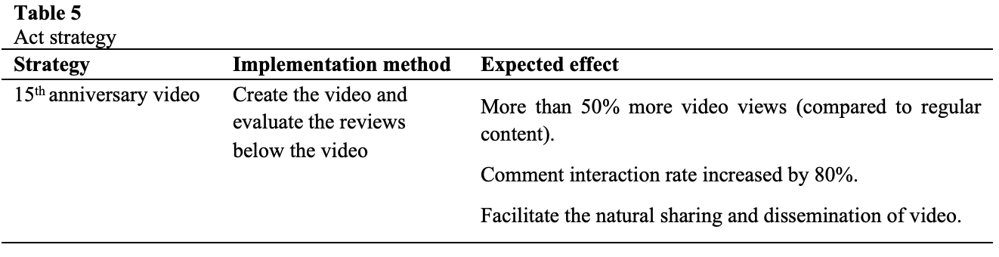
This strategy should involve continuously monitoring comment and engagement sentiment to gauge the resonance of content. Utilizing tools such as Hootsuite listening can help achieve this. By incorporating a feedback loop, analytics become more dynamic and user centric.
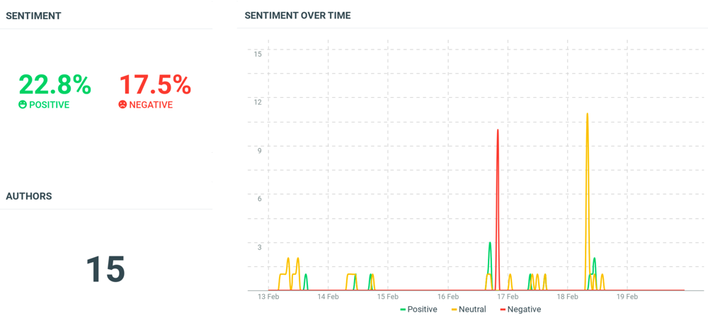
These strategies are aligned with relevant consumer trends. Audiences crave participation in online communities and a sense of belonging, and they are more willing to engage in immersive, interactive experiences (Euromonitor International, 2025). Using humour, trending topics, and interactive content can further enhance engagement (Hootsuite Inc., no date).
3.3 Convert – Lucky Subscriber
To satisfy the audience preference for sustainable, meaningful brand interactions and their desire for exclusive rewards (Euromonitor International, 2025). Low budget guerrilla marketing tactics or responding to fan feedback is important (Kotler et al., 2025), this report suggests plan convert strategy: For each video posted over the next three months, five random reviewers will receive a limited edition The Redmen TV 15th Anniversary Edition hoodie. The hoodie design incorporates elements of the 15th anniversary logo and Liverpool FC and is only available through this event. Participation requirements: Must subscribe to YouTube channel; Comment on the video. The lucy subscriber cannot be reward more than one time. The advertise picture with the prospective results are presented in Fig. 18 and Table 6:
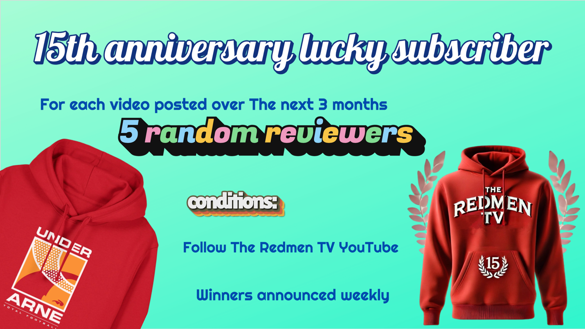
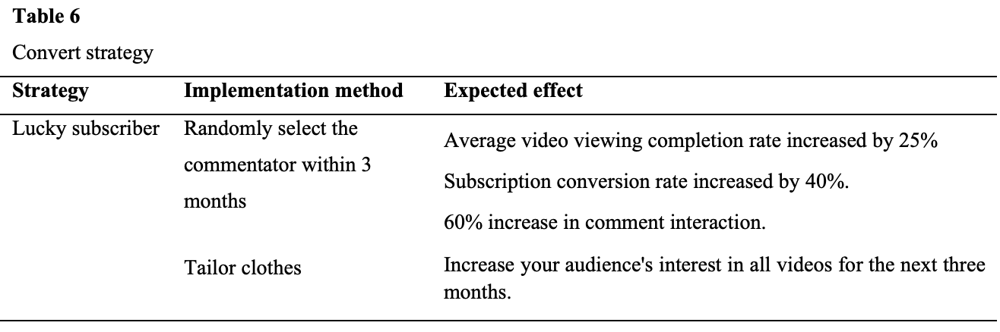
3.4 Engage – Top-up Discount
Mintel (2025) reported that audiences are willing to pay for cost-effective content but are sensitive to value. However, loyal audiences are willing to pay for brand-exclusive experiences (Euromonitor International, 2025). Combining these insights with The Redmen TV’s current situation, the engage strategy focuses on repeat purchases, satisfaction, loyalty and advocacy through an anniversary top-up discount. The campaign enhances users' willingness to pay and brand stickiness through limited-time offers. It offers a 15% discount on Redmen TV Plus membership during the anniversary period (recommended 1 month) to encourage new subscribers to try and renew their subscriptions. Promo codes such as “REDMEN15OFF” can be posted across social media and official websites for easier campaign tracking. The discount can also link with the hashtag activity to form an integrated marketing voice. Countdown reminders at the end of YouTube videos, in community posts, and on social platforms can create urgency and guide more users to act.
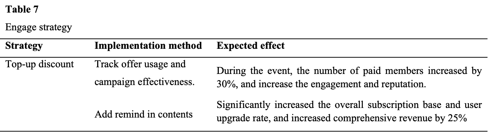
3.5 Cost-Benefit Analysis
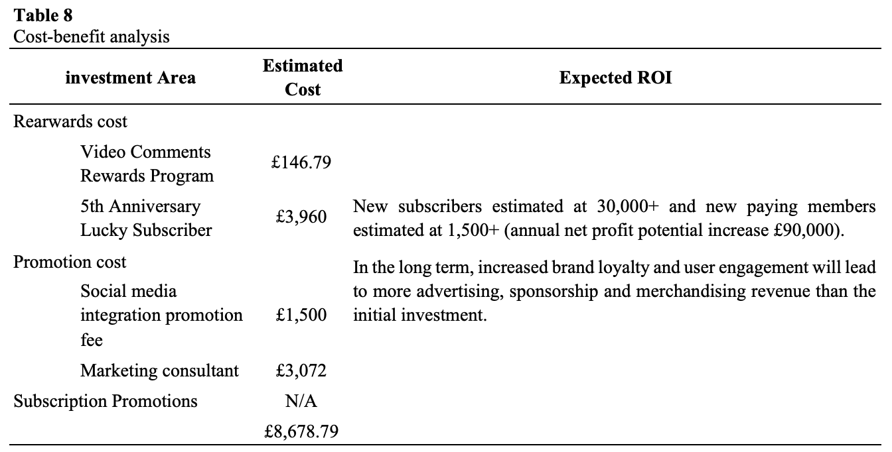
Assumptions: The cost of reward membership is based on the price of caption membership which is £6.99 and the £20.00 per hoodie.
The top-up discount does not generate a direct cash outlay but has an opportunity cost - the discounted price converts member revenue below the normal selling price.
3.6 Implementation Timeline
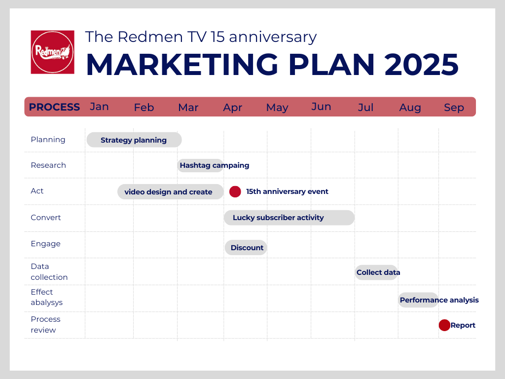
3.7 Plan Limitation
The success of hashtag, videos will depend on algorithmic exposure; we will monitor the results closely and adjust the content style if necessary. This solution may be easy imitated by competitors. Thus, it needs to develop a first-mover advantage.
References
Barney, J.B. and Hesterly, W.S. (2019) Strategic management and competitive advantage: concepts and cases. Edition 6, global edition. Harlow London New York Boston San Francisco Toronto Sydney Dubai Singapore Hong Kong Tokyo Seoul Taipei New Delhi Cape Town Sao Paulo Mexiko City Madrid Amsterdam Munich Paris Milan: Pearson.
Chaffey, D. (2024, May 2). The RACE Framework: A practical digital marketing strategy framework. Smart Insights. https://www.smartinsights.com/digital-marketing-strategy/race-a-practical-framework-to-improve-your-digital-marketing/ (Accessed: 16 February 2025)
Chaffey, D. and Chadwick, F. (2022) Digital Marketing: Strategy, implementation and practice. 8th ed. Hoboken, England: Pearson.
Euromonitor International (2025). Top global consumer trends 2025. Available at: https://www.euromonitor.com/insights/top-consumer-trends (Accessed: 13 February 2025)
Feedspot. (2025, February 14). FeedSpot for YouTubers. FeedSpot for YouTubers. https://videos.feedspot.com/liverpool_fc_youtube_channels/ (Accessed: 24 February 2025)
Hanlon, P., 2006. Primalbranding: Create zealots for your brand, your company, and your future. Simon and Schuster.
Hootsuite Inc. (no date). Free social media tools. Free Social Media Tools. https://www.hootsuite.com/social-media-tools (Accessed: 19 February 2025)
Hootsuite Inc. (no date). The Redmen TV, this is Anfield Hootsuite Listening Report. From 14/02/25 00:00:00 to 21/02/25 00:00:00 [unpublished report]
Hootsuite Inc. (no date). The Redmen TV, Tifo Football Hootsuite Listening Report. From 14/02/25 00:00:00 to 21/02/25 00:00:00 [unpublished report]
Kotler, P., Armstrong, G. and Balasubramanian, S. (2024) Principles of marketing. Nineteenth edition, global edition. Harlow, England London New York Boston San Francisco Toronto Sydney Dubai Singapore Hong Kong Tokyo Seoul Taipei New Delhi Cape Town Sao Paulo Mexico City Madrid Amsterdam Munich Paris Milan: Pearson.
Maych TV. (2025, January 17). A BRIEF HISTORY OF REDMEN TV (and me) [Video]. YouTube. https://www.youtube.com/watch?v=NyTw75nOil4
Net Worth Spot (2025). The Redmen TV Net Worth and Earnings (February 2025). Available at: https://www.networthspot.com/the-redmen-tv/net-worth/ (Accessed: 7 February 2025)
Osterwalder, A. and Pigneur, Y. (2013) Business model generation: a handbook for visionaries, game changers, and challengers. New York: Wiley&Sons.
Philip Kotler, H.K. (2023) Entrepreneurial Marketing: Beyond Professionalism to Creativity, Leadership, and Sustainability. 1st ed. Newark: Wiley.
Hoare, S. (2022) We’re hiring! | Vacancy for a Marketing Assistant at The Redmen TV! - The Redmen TV. https://theredmentv.com/were-hiring-vacancy-for-a-marketing-assistant-at-the-redmen-tv/. (Accessed: 7 February 2025)
This is anfield (no date) YouTube. Available at: https://www.youtube.com/@thisisanfield (Accessed: 19 February 2025).
The Redmen TV (no date). Available at: https://theredmentv.com/ (Accessed: 7 February 2025).
The Redmen TV’s subscriber count, stats & income - VIDIQ YouTube Stats. (n.d.). vidIQ for YouTube. https://vidiq.com/youtube-stats/channel/UC30avO2n6knAFiH2c8e4qiw/ (Accessed: 19 February 2025)
The Redmen TV’s YouTube Stats (Summary profile) - Social Blade stats. (n.d.). https://socialblade.com/youtube/c/theredmentv (Accessed: 19 February 2025)
LinkedIn (no date) ‘The Redmen’s profile’. Available at: https://uk.linkedin.com/company/the-redmen-tv (Accessed: 7 February 2025).
Mintel. (2025). 2025 mintel trends: predictive insights. Available at: https://www.mintel.com/predictive-insights-trends/ (Accessed: 20 February 2025).